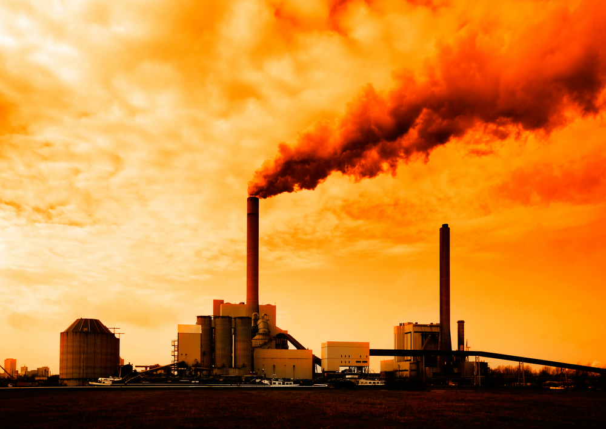
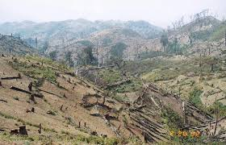
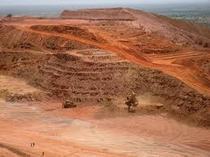

GREEN HOUSE GASES
The Earth has a natural greenhouse effect where certain gases (known as greenhouse gases) in the atmosphere allow the sunlight to enter but absorb the heat radiation. Because these gases absorb the heat, they keep the average surface temperature on Earth around 14°C. Without the natural greenhouse effect, the Earth’s average surface temperature would be around -19°C.
Since the industrial revolution, human activity has increased the amount of greenhouse gases in the atmosphere (shown in the graph to the right). The increased amount of gases which absorb heat, has directly lead to more heat being retained in the atmosphere and thus an increase in global average surface temperatures. This change in temperature is known as global warming. The increase in temperature is also leading to other effects on the climate system. Together these affects are known as anthropogenic (human caused) climate change.
The main greenhouse gases include:
Water vapour:
The most abundant greenhouse gas (GHG), however because it spends just a short time in the atmosphere, and humans have a very impact on the amount of water in the atmosphere, it is not considered the most important GHG.
Carbon dioxide (CO2):
Is actually only a small part of the atmosphere, but one of the most important GHGs. CO2 is released naturally into the atmosphere through volcanic eruptions and animal respiration but it is also released through human activities such as deforestation and the burning of fossil fuels for energy. CO2 also spends a long time in the atmosphere increasing its impact. Since the industrial revolution, humans have increased atmospheric CO2 concentration by 30%.
Methane:
The second most important GHG, is produced both naturally and through human activities. The most significant sources of Methane come from the decomposition of organic matter e.g. in landfills and in agriculture. Another large source is from the digestion of ruminants (cows, goats etc). Methane is a stronger GHG than CO2 because it can absorb more heat, however it is much less abundant in the atmosphere.
Nitrous oxide:
A very powerful greenhouse gas which is heavily produced in the agriculture sector, specifically in the production and use of organic fertilizers. It is also produced when burning fossil fuels.
Chlorofluorocarbons (CFCs):
These man-made compounds were produced for industrial use, mainly in refrigerants and air conditioners. They are now regulated under the Montreal Protocol due to their adverse affect on the Ozone Layer.
Since the beginning of the 20th century industrial activity grew 40-fold, and the emissions of greenhouse gases grew 10-fold.
The amount of CO2 in the air increased from some 280 parts per million by volume (ppmv) at the beginning of the century to 389 ppmv at the end of 2010. The amount of CO2 varies throughout the year as the result of the annual cycles of photosynthesis and oxidation, illustrated in the graph. Similarly, methane (CH4) rose from a preindustrial atmospheric concentration of around 700 parts per billion by volume (ppbv) to about 1,789 ppbv by 2007.
The overall warming from 1850 to the end of the 20th century was equivalent to about 2.5 W/m²; CO2 contributed around 60 per cent of this figure and CH4 about 25 per cent, with N2O and halocarbons providing the remainder. This has resulted in Earth’s average temperature increasing from 15.5°C to 16.2°C in the last 100 years. The warming effect that would result from a doubling of CO2 from pre-industrial levels is estimated to be 4 W/m².
DEFORESTATION
Forests are vital for life, home to millions of species, they protect soil from erosion, produce oxygen, store carbon dioxide, and help control climate. Forests are also vital for us to live as they provide us with food, shelter and medicines as well as many other useful things. They also purify the air we breathe and water that we need to survive. Deforestation by humans is causing all of these necessary functions to be lessened, and hence damaging the atmosphere even further.
Forests play a huge role in the carbon cycle on our planet. When forests are cut down, not only does carbon absorption cease, but also the carbon stored in the trees is released into the atmosphere as CO2 if the wood is burned or even if it is left to rot after the deforestation process.
Smaller crops e.g. plants and agricultural crops also draw in carbon dioxide and release oxygen, however forests store up to 100 times more carbon than agricultural fields of the same area.
Deforestation is an important factor in global climate change. Climate change is because of a build up of carbon dioxide in out atmosphere and if we carry on cutting down the main tool we have to diminish this CO2 build up, we can expect the climate of our planet to change dramatically over the next decades.
It is estimated that more than 1.5 billion tons of carbon dioxide are released to the atmosphere due to deforestation, mainly the cutting and burning of forests, every year.
Over 30 million acres of forests and woodlands are lost every year due to deforestation; causing a massive loss of income to poor people living in remote areas who depend on the forest to survive.
AEROSOL PRESENT IN THE ATMOSPHERE
Atmospheric aerosols is able to alter the climate in two important ways.
This can be explained as, scattering of solar radiation acts to cool the planet, while the absorption of solar radiation by aerosols warms the air directly instead of absorption of sunlight from the surface of the Earth.
The human contribution to the amount of aerosols in the atmosphere takes many forms, such as:
The concentrations of condensation nuclei are about three times higher in the Northern Hemisphere than in the Southern Hemisphere. This higher concentration is estimated to result in radiation forcing that is only about 50 percent higher in the Northern Hemisphere as reported.
MINING ACTIVITIES
Mining oil, coal and other mineral products underlying in deep beds allow methane, a greenhouse gas, to escape from the earth. Disturbing the soil, stored gases make their way into the environment.
